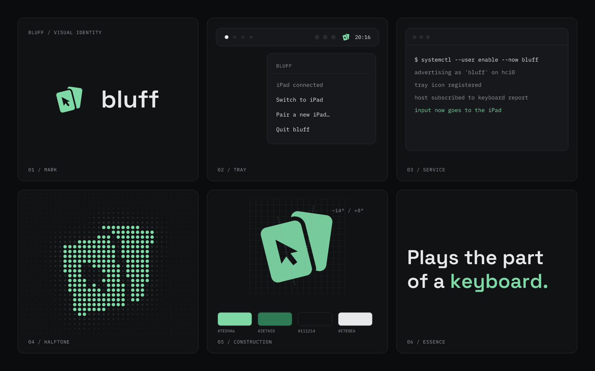

CARD TABLE FELT
bluff
A Linux laptop that plays the part of a Bluetooth keyboard for an iPad.
Green in the mark. Monochrome around it.
01
The mark
Two fanned playing cards. A bluff is a card game, and two cards are two screens. The front card carries the pointer as negative space, and a gap keeps the cards apart.
Dark / colorDownload SVG

Light / colorDownload SVG

Monochrome / lightDownload SVG

Monochrome / darkDownload SVG

02
Color with a narrow role
Felt
#7ED9A6Mark and accents on dark
Baize
#2E7A55Mark and accents on light
Graphite
#111214Dark background
Silver
#E7E8EAText on dark
Paper
#FBFBFCLight background
Surfaces, borders and body text stay monochrome and match Kascoord. Felt is for the mark and small accents on dark backgrounds; use Baize on light ones.
03
Typography
SPACE GROTESK / DISPLAY · GEIST / BODY
Plays the part
of a keyboard.
of a keyboard.
The same pairing as Kascoord: Space Grotesk for the wordmark and headings, Geist for body text.
IBM PLEX MONO / TECHNICAL LABELS
bluff
laptop / ipad / pairing
0123456789
Monospace for commands, log lines and short labels.
04
Small sizes & tray states
Tray
- Gray: no iPad connected.
- Silver: input stays on the laptop.
- Felt: input goes to the iPad.
- Silver with a Felt pointer: pairing.
Keep it consistent
- Full logo: 120px minimum width. Mark: 16px minimum.
- Use the supplied SVG geometry; the tilt is part of the mark.
- Do not add gradients, shadows or extra rotation.
05
Board
